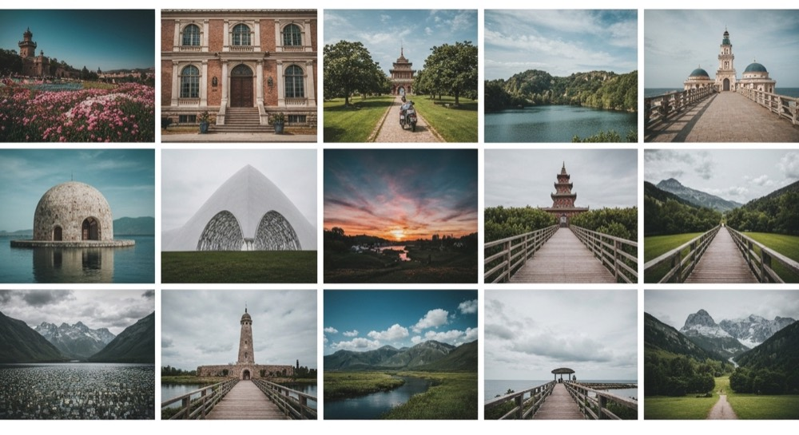
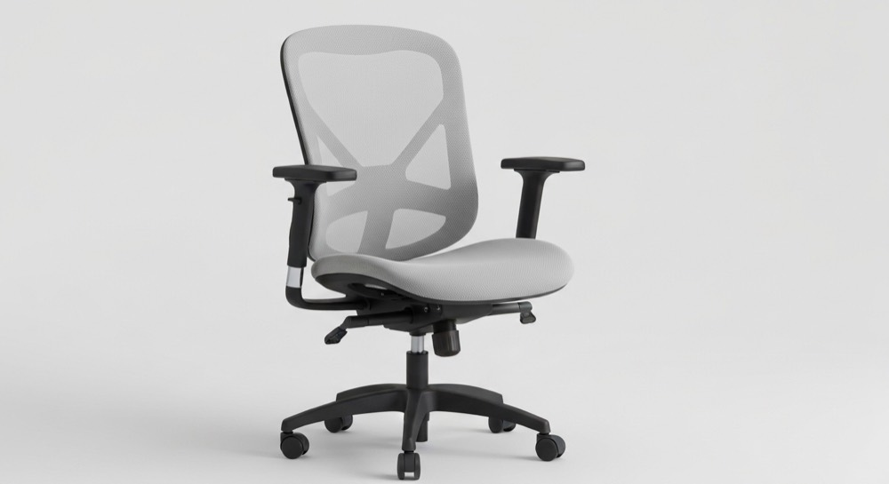
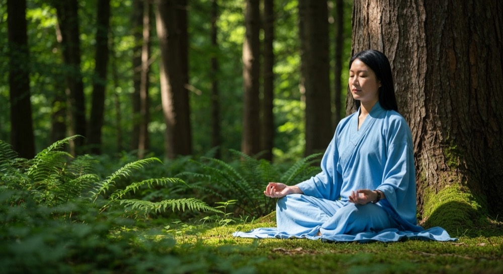
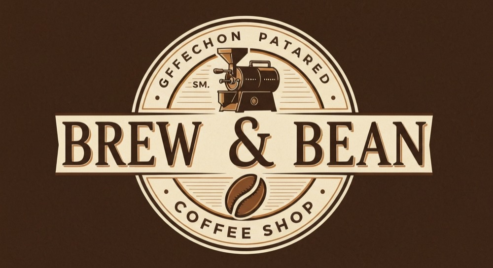
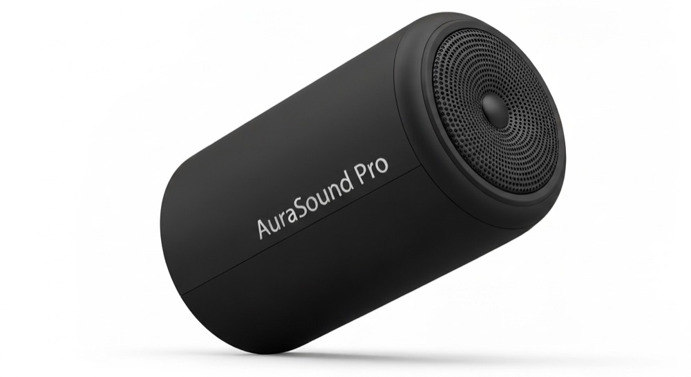
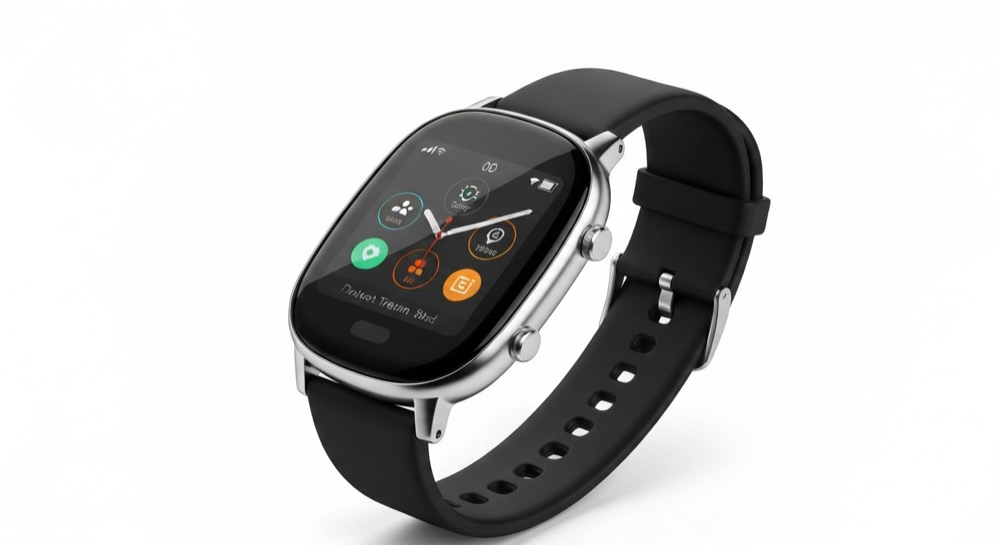

<ui-media>Everything that controls the media frame: the ar() aspect-ratios, op() object-position, fl() flip, hv() hover effects, the sc() scrim, ribbon/badge overlays, <video> and the CSS-only carousel. All driven by variant tokens — no JavaScript (the one exception, cursor-tracked hv(track), is noted inline).
See also: index.html (the full engine) · content.html (the <ui-content> side) · ui-card-tokens.md (token reference).
ar()Sets the media frame's aspect-ratio (and drops its min-block-size so the ratio wins). Eight stops cover the common print/screen ratios. Same image, same width — only the crop changes.

ar(1/1)Without an ar(), the frame falls back to its natural image height (bounded by --ui-card-media-min, default 12.5rem).
op()When the frame's ratio crops the image, op() picks which part stays in view — the same 9-code grid used everywhere else: tl tc tr · cl cc cr · bl bc br. All nine below share one square frame and one wide image.
--ui-card-object-fitThe frame defaults to object-fit: cover (fill & crop). Override the token per instance for contain (letterbox, whole image visible) — handy for logos and product shots that must not crop.

cover (default)fl()Mirror the media without editing the asset. fl(h) flips horizontally, fl(v) vertically, fl(hv) both. It uses transform on the image, separate from the scale/translate that hv() drives, so flip and hover compose.
hv()Hover (or focus) a card. zoom / pan / track move the image inside a fixed frame; lift / shrink / tilt transform the whole card. Tune with --ui-card-hv-* and --ui-card-hover-duration. All respect prefers-reduced-motion.

The image scales up inside the frame.
Zooms and drifts in a fixed direction.
The image follows the cursor — the only effect that needs a tiny pointer handler (below).
The card rises with a deeper shadow.
The card scales down slightly — a press-in feel.

The card rotates a degree or two.
sc() over mediaA scrim is the darkening gradient painted over the image (via ui-media::after) so overlaid text stays legible. ov(pos) places the content over the media; bare sc auto-matches that position, or pass an explicit sc(pos). The colour is the --ui-card-scrim-color token.
Place data-part="ribbon" or data-part="badge" inside <ui-media>. Both use the same 9-code pos() placement and color="info|success|warning|error" for the semantic palette. A ribbon can also be variant="diagonal" (corner positions only).

Featured NewThe four diagonal-ribbon corners (tl tr bl br):
A native <video> fills the frame exactly like an image — same object-fit: cover, same ar(). Use native attributes (controls, poster, muted, loop); no JS.
Native <video> with the same cover-fit as an image.
variant="carousel"Add the carousel token to put multiple sources in a scroll-snap row. By default it shows CSS-only navigation — dots (::scroll-marker) and prev/next arrows (::scroll-button()) — with no extra markup and no JS. Chromium-only for now; elsewhere it degrades to a plain swipe scroller.
Swipe, tap a dot, or click an arrow.
A carousel works in any arrangement — here it is the media half of a horizontal card.
controls attributePick which controls show with controls="dots arrows none" (space-separated). controls="none" leaves a bare swipe scroller — there is no separate gallery variant; a carousel with its controls off is the gallery.

3 photosEvery colour, size and glyph is a token. Recolour the dots and arrows with --ui-card-dot-* / --ui-card-arrow-*, resize them, or swap the chevron for your own url() SVG.
url()